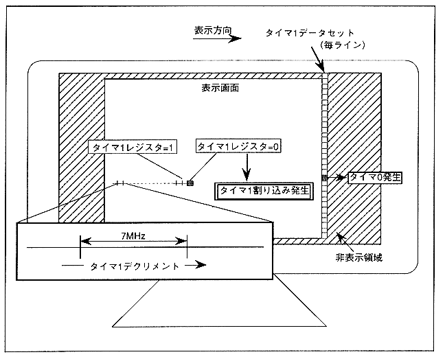

The timer 1 data set register (see register details) data is set in timer 1 when an H-blank-IN interrupt is received. The timer counts down at a frequency of approximately 7MHz (1 dot drawing), which is 1/4 of the system clock. Depending on the value of the timer 1 mode register (see register details), an interrupt can be generated at one point in combination with timer 0, or an interrupt can be generated for each line regardless of timer 0. Figure 2.13 shows the process from generating a timer 1 interrupt in synchronization with timer 0.
Figure 2.13 Timer 1 interrupt generation process (synchronized with timer 0)
